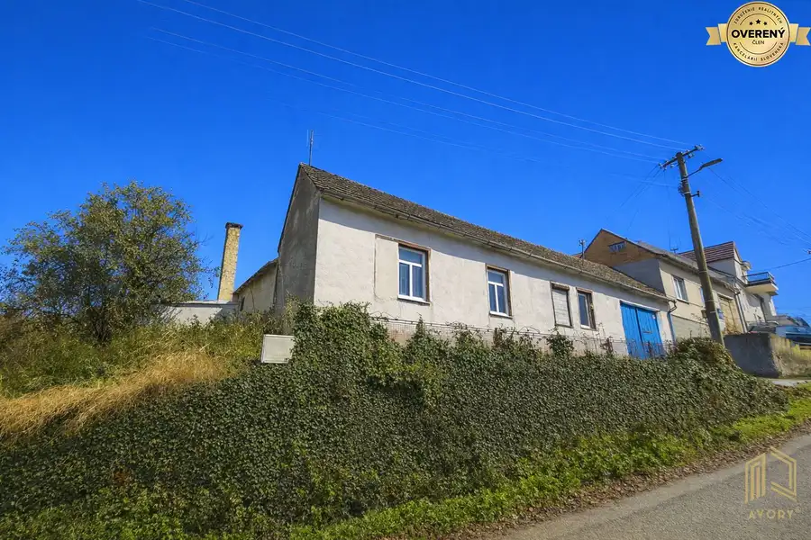
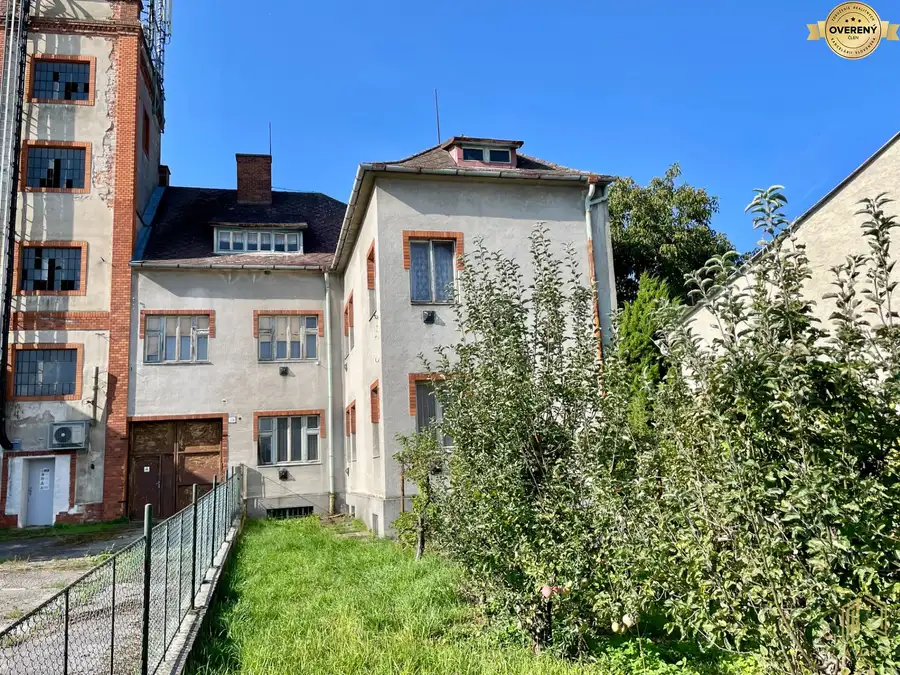

Na prenájom zariadený 2-izb. byt s balkónom – Skalica, Pod Hájkom
Skalica
- Dispozícia2-izbový
- Plocha56 m²
- Poschodie3. z 3
- Stavúplne prerobený
- Vlastníctvoosobné
O nehnuteľnosti
AVORY Realitné Centrum ponúka na dlhodobý prenájom príjemný, čistý a udržiavaný byt s výmerou 60 m². Nachádza sa na 3. poschodí z 3 v bytovom dome bez výťahu a je voľný ihneď.
Byt je zariadený a pripravený na nasťahovanie. Nájdete v ňom kuchyňu so základným kuchynským servisom, práčku aj priestor na pohodlný oddych. O príjemnú teplotu počas horúcich letných dní sa postará klimatizácia, ktorou si môžete prikúriť aj v chladnejších dňoch skorej jesene.. Balkón ponúka výhľad do zelene. Veľkým praktickým bonusom je priestranná komora na chodbe hneď pri byte, kam sa zmestí všetko, čo chcete mať poruke, ale nie priamo v byte. K bytu patrí aj pivnica v suteréne.
Parkovať môžete pohodlne priamo pri bytovom dome.
Mesačné nájomné vrátane energií a internetu je 550€ a platí sa mesiac vopred. Pri podpise zmluvy sa uhrádza vratná kaucia 550€ a odmena realitnej kancelárii 300€. Byt je určený najviac pre dve osoby. Malé zvieratko je po dohode vítané.
✔ podlahová plocha bytu 56m2 + veľká komora na poschodí + murovaná pivnica v suteréne.
✔ klimatizácia
✔ internet v cene
Ak hľadáte zariadený byt, do ktorého sa môžete hneď nasťahovať, rada vám ho ukážem na osobnej obhliadke.
AVORY Realitne Centrum – text, fotografie a pôdorys sú dielom a majetkom realitnej kancelárie AVORY Realitne Centrum
Kontakt: Monika Krčová – certifikovaný realitný maklér
e-mail:
tel. č.
office: Štefánikova 697, 905 01 Senica
✔ Rada zodpoviem všetky vaše otázky telefonicky v pracovných dňoch od 9:00 do 17:30 hod. Ak sa mi nedovoláte alebo ma kontaktujete mimo uvedeného času, prosím pošlite SMS alebo e-mail a budem vás spätne kontaktovať.
AVORY Realitné Centrum, robíme svet realít lepším miestom ®.
Parametre
| Celková rozloha | 60 m² |
|---|---|
| Úžitková plocha | 56 m² |
| Poschodie | 3/posledné poschodie |
| Počet poschodí | 3 |
| Počet izieb | 2 |
| Vlastníctvo | osobné |
| Stav | úplne prerobený |
| Plyn | nie |
| Internet | optika |
| Kúpeľňa | sprchovací kút |
| Balkón | áno |
| Pivnica | áno |
| Výťah | nie |
| Parkovanie | verejné |
| Postavené z | panel |
| Zariadenie | zariadený |
| Zateplený objekt | áno |
| Krb | nie |
| Káblová televízia | áno |
| Energetický certifikát | nie |
| Bezbariérový prístup | nie |
| Okná | plastové |
| Dátum zverejnenia | 15. 9. 2026 |
Kde to je
Mohlo by Vás zaujímať

Rodinné domy8 59 000 €Na predaj rod. dom s pozemkom 3.122m2, Unín okr. Skalica Unín 4-izbový150 m² AVORY Realitné Centrum / Ponúkame na predaj jednopodlažný rodinný dom v pokojnej časti obce Unín pri Skalici. Dom je v pôvodnom stave, postavený v…
Rodinné domy10 139 000 €Rodinný dom 11+, pozemok 796m2, Gbely, okr. Skalica Gbely 11-izbový215 m² AVORY Realitné Centrum / Ponúkame na predaj veľký 11+ rodinný dom s dvomi samostatnými bytmi na prvom a druhom podlaží a bývaním v podkroví. Dom je…